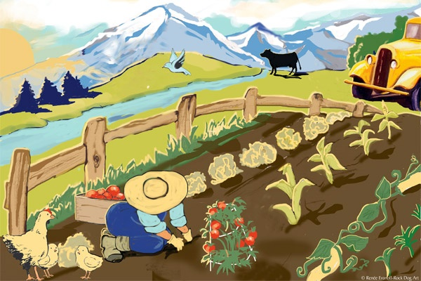
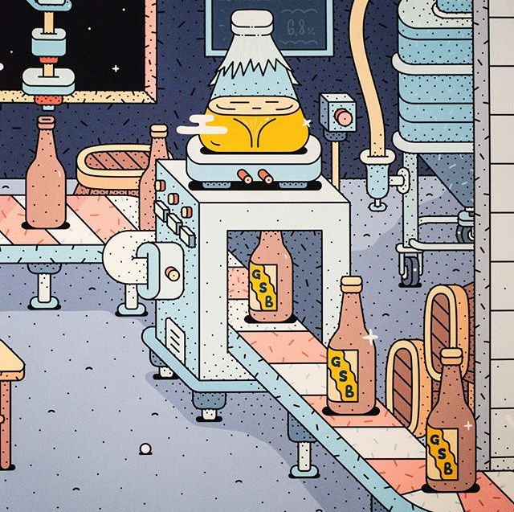
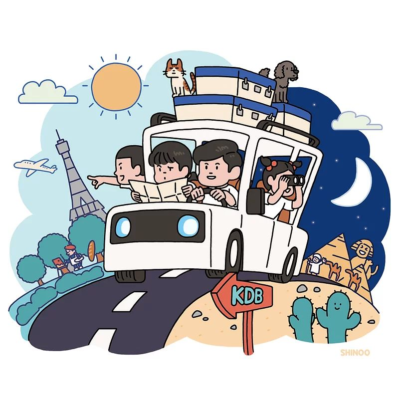

.png)
Pembangunan konvensional adalah model pembangunan yang dilakukan oleh pemerintah dengan fokus utama pada pertumbuhan ekonomi dan aspek material. Pembangunan ini bertujuan meningkatkan Produk Domestik Bruto (PDB), investasi, serta industrialisasi. Namun, dalam pelaksanaannya, pembangunan konvensional cenderung lebih mengutamakan keuntungan ekonomi dan kurang memperhatikan kelestarian lingkungan serta keadilan sosial dalam jangka panjang.
1. Mengedepankan Pelestarian Lingkungan
Pembangunan dilakukan dengan menjaga kelestarian alam, mengurangi pencemaran, dan menggunakan sumber daya alam secara bijaksana.
2. Menjamin Keadilan Sosial
Pembangunan harus memberikan kesempatan dan manfaat yang adil bagi seluruh masyarakat, tanpa membedakan latar belakang atau kondisi ekonomi.
3. Memperhatikan Kebutuhan Generasi Mendatang
Pembangunan harus memenuhi kebutuhan masyarakat saat ini tanpa mengurangi kemampuan generasi mendatang untuk memenuhi kebutuhan mereka sendiri.
Pembangunan konvensional bertujuan untuk meningkatkan pertumbuhan ekonomi dan kesejahteraan masyarakat melalui peningkatan hasil produksi, investasi, serta pembangunan industri dan infrastruktur. Selain itu, pembangunan ini juga bertujuan untuk meningkatkan pendapatan masyarakat, membuka lapangan pekerjaan, dan memenuhi kebutuhan dasar seperti pangan, sandang, serta tempat tinggal.





Sektor primer merupakan kegiatan ekonomi yang memanfaatkan sumber daya alam secara langsung.

Pertanian, perikanan, kehutanan, dan pertambangan.
Sektor sekunder merupakan kegiatan ekonomi yang mengolah bahan mentah menjadi barang jadi atau setengah jadi.

Industri tekstil, pabrik makanan, dan manufaktur.
Sektor tersier merupakan kegiatan ekonomi yang menyediakan jasa untuk memenuhi kebutuhan masyarakat.

Perdagangan, transportasi, perbankan, dan pariwisata.
Discover how each sector contributes to development.


Mengukur peningkatan kegiatan ekonomi suatu negara melalui pertumbuhan Produk Domestik Bruto (PDB).
Mengukur rata-rata pendapatan setiap penduduk untuk melihat tingkat kesejahteraan ekonomi.
Mengukur kualitas hidup masyarakat berdasarkan kesehatan, pendidikan, dan standar hidup layak.
Menilai apakah hasil pembangunan dan pendapatan dapat dinikmati secara adil oleh seluruh masyarakat.